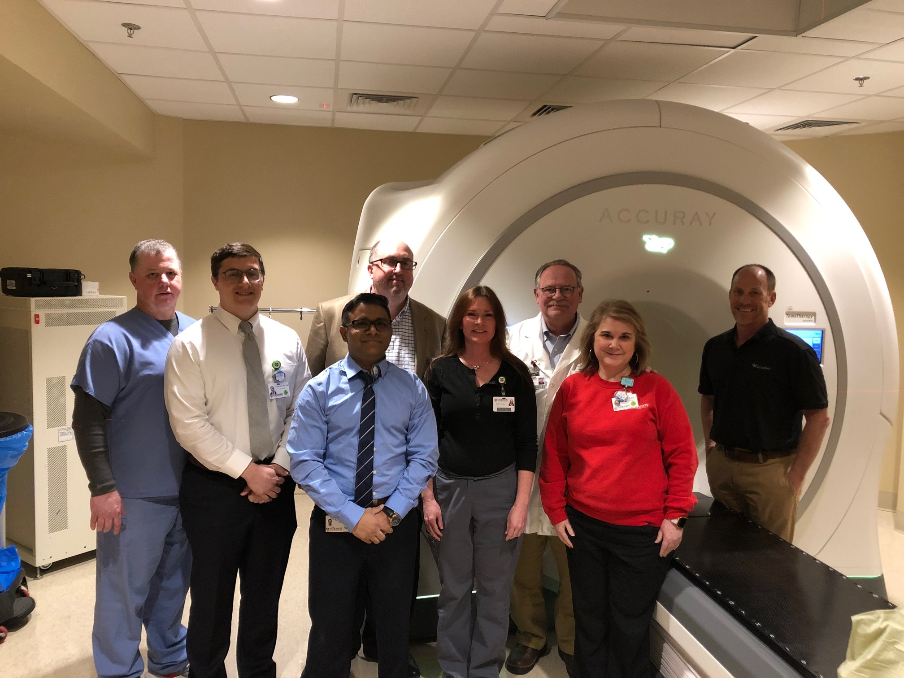
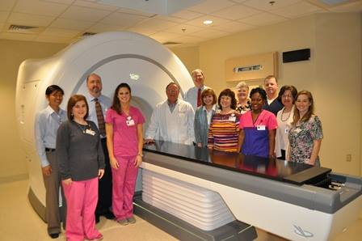
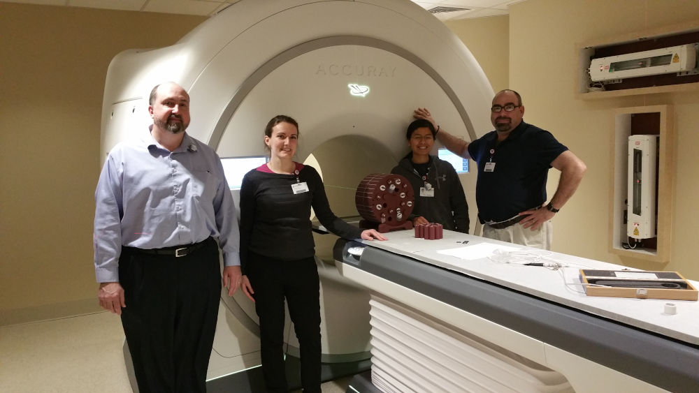
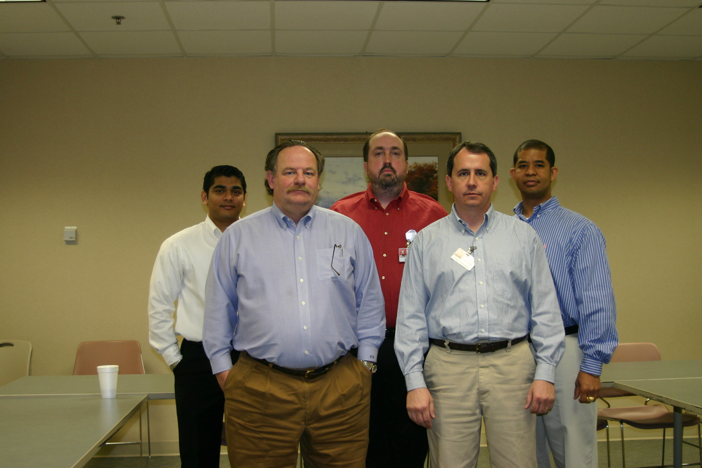
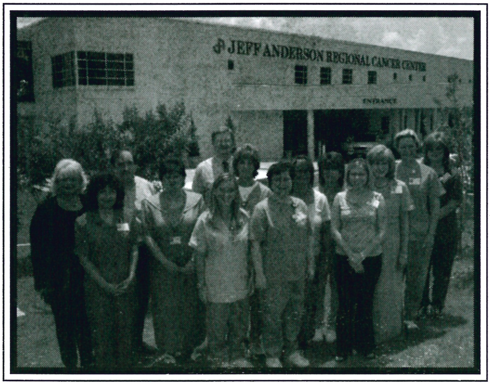
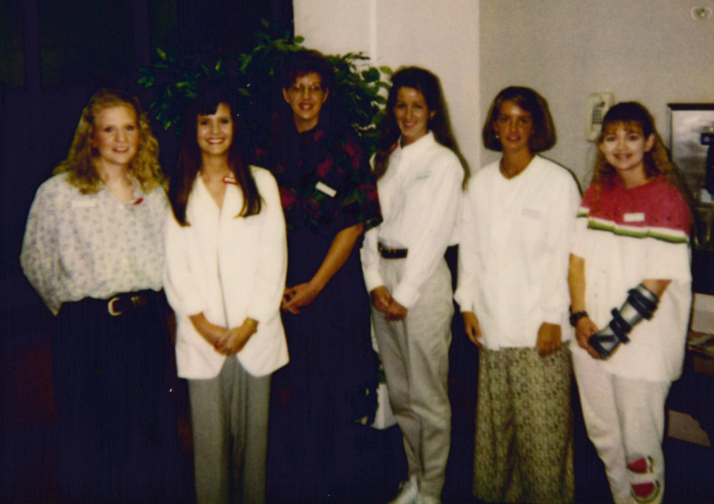
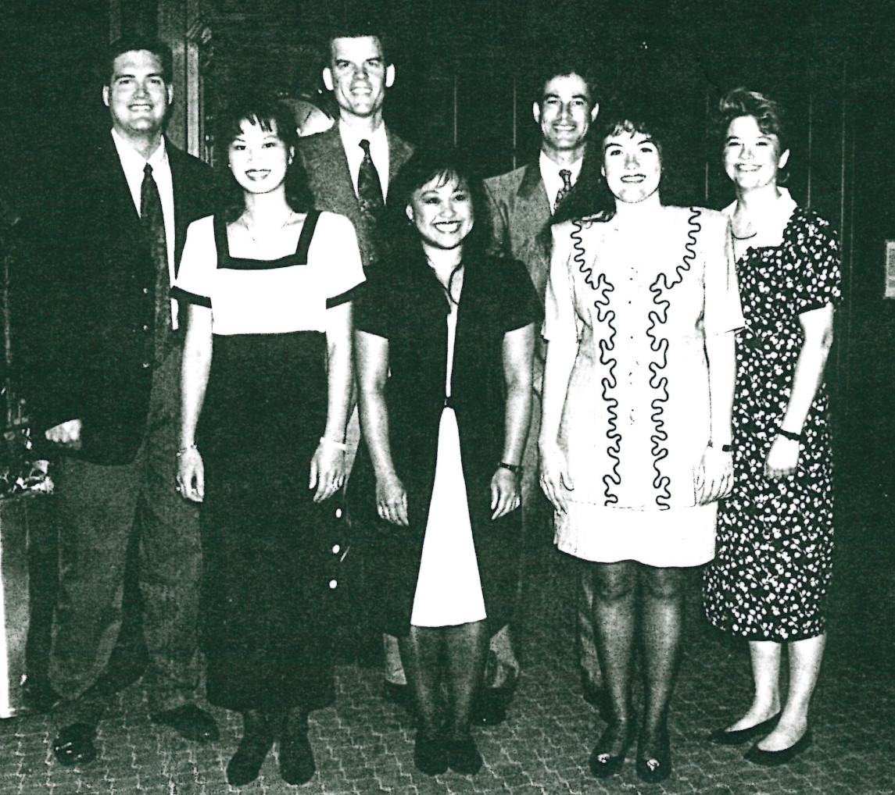
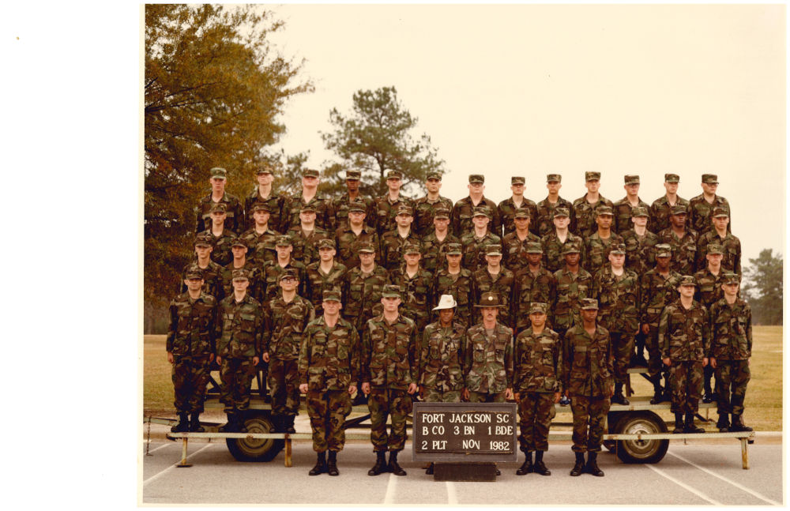

pics¶

2020 Xoft Physicist Training
2019 RayStation Physicist Training
2018 JARCC Christmas Party

2018 JARMC Tomotherapy-RayStation Launch
2017 MSMS Advisory Board

2015 JARMC Tomotherapy Clinical Launch

2015 JARMC Tomotherapy Launch
2010 JARMC Cancer Center
2010 USM Hattiesburg, MS

2008 ADAC White Paper

2003 Jeff Anderson Regional Cancer Center

1996 Baylor School of Radiation Therapy Graduating Class

1995 Baylor School of Radiation Therapy Graduating Class

1982 Bravo Co 3rd Btn 1st BCT Bde Ft Jackson SC